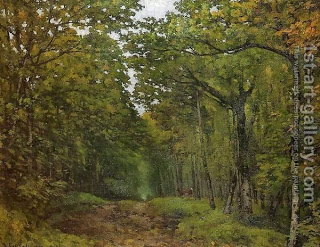

Pesachim 111 - Knowledge against demons
Having discussed the evil forces (no longer extant) connected to even numbers, the Talmud turns to other sources of knowledge that are helpful against demons. Their favorite living places are in the trees (especially palm trees) and in the shadows. Thus, knowing how to discern and avoid such places helps. If one does find himself in these places or in dangerous situations, the Talmud gives phrases from the scriptures to recite, to counteract the negative influence.
Furthermore, it is good to know the names or qualities of specific demons, in order to write protective amulets. Here is a story to illustrate. A sorb tree may be inhabited by no less than sixty demons of the "shedei" variety. Once a watchman stood by such tree, the demons entered his body, and he was in danger. A certain Sage who did not know about sorb tree wrote an amulet which mentioned only one demon. He heard demon dance inside the tree, singing, "Although this young Torah scholar wears a turban, he does not even know how to say a blessing over it" (incidentally, the blessing is "… who adorns Israel with beauty.") They meant that he is not worthy of his garment. Another Sage overheard this and wrote an amulet for sixty demons. Afterward he heard them saying, "Remove your belongings from here!"
More advice: putting one’s hand on one’s lip leads to anxiety, and putting it on the forehead - to sleep. Some explain that doing actions that are outward signs of such moods actually brings him to these moods.
Art: Avenue of Chestnut Trees by Alfred Sisley